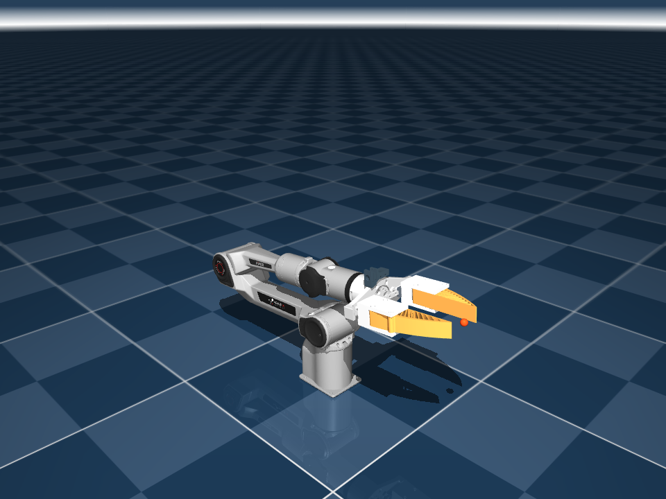
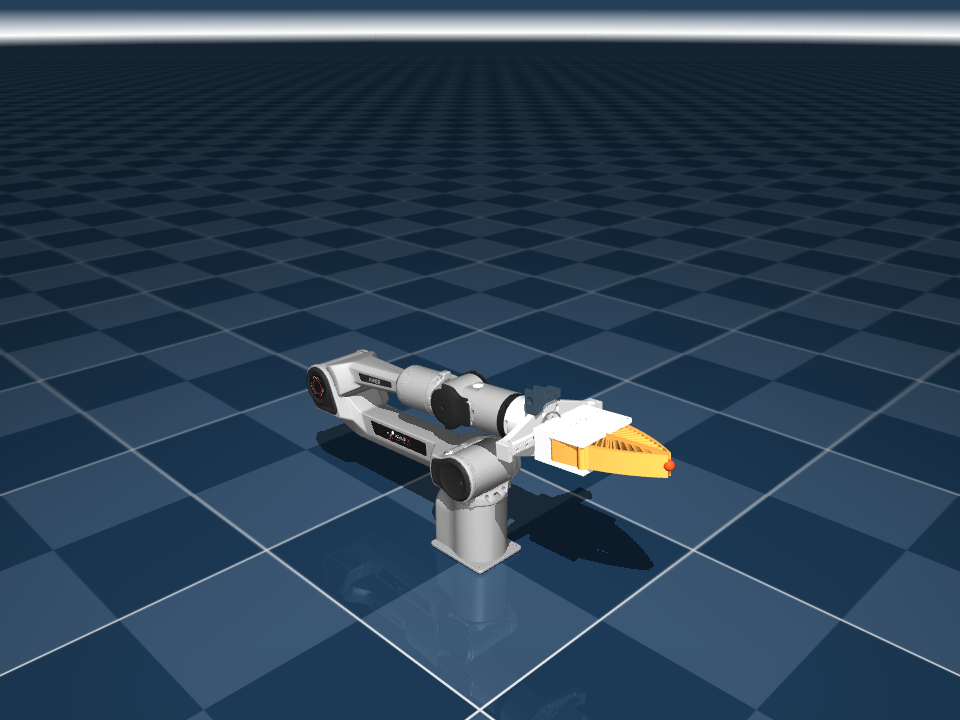
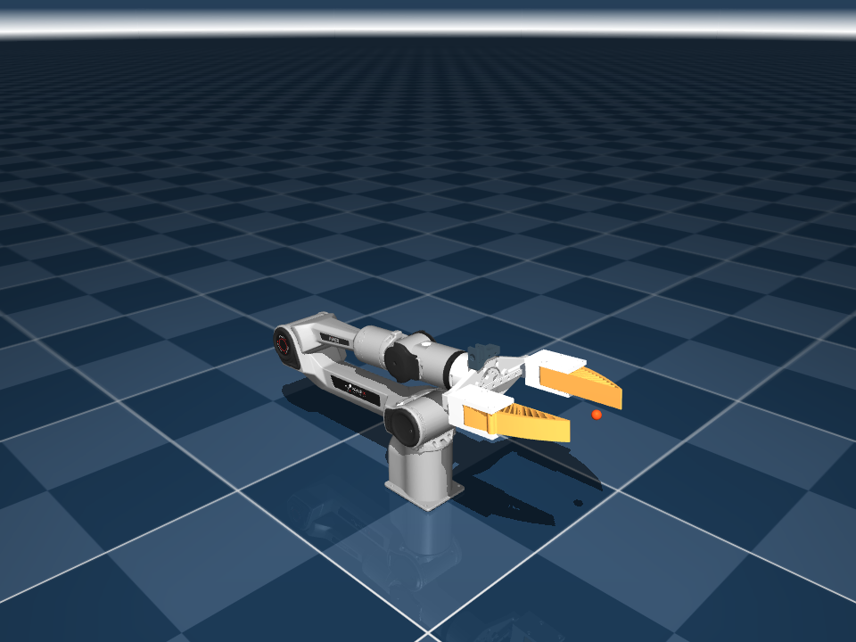

Piper + UMI · 模型交付PIPER × UMI · 外观与原生法兰更新 · 2026-09-28
白色支座，浅桔黄色夹爪
机械臂采用你提供的 Piper 外观网格；link6 输出盘与末端安装法兰恢复原生件。URDF、MuJoCo XML、USD 已同步更新，每个文件夹都带齐模型依赖。
模型文件
每个格式目录均可独立复制；运行时无需原始 STEP、ZIP 或其他格式文件夹。软件运行时需另行安装。

本次模型在 MuJoCo 中的实际渲染。橙色小点为名义 tool0；MuJoCo 预览使用蓝色格子地板。更新后的 8 秒运动预览，可离线播放。
本次具体修改
压缩包引用的 material.mtl 未随包提供。已按其中材质名称，从官方旧版 Piper DAE 找回对应颜色，并直接写入三种模型；运行时没有缺失的材质文件。铭牌由网格组成，无需外部贴图。
原生法兰的安装位置已同步校正。驱动安装面采用官方相对 link6 的 +4.5 mm 偏置。相较旧的自改法兰，保留的整套末端沿 link6 Z 前移约 3.013 mm，并做微小 XY 对中修正。精确变换记录在各目录 model_info.json。压缩包中的原装夹爪是另一套 145 mm 导轨，因此没有覆盖你的 155 mm UMI 机构。
材质来源与颜色 · 源文件哈希与法兰变更 · 完整模型参数
夹爪运动关系
六轴旋转关节加两侧平移指关节，共 8 个物理坐标、7 路独立控制。两侧空间轴相反、关节数值相同；只控制左指，右指等量跟随。URDF mimic 倍率为 +1，MuJoCo 使用等式约束，USD 使用 PhysX mimic。
单指 q=0–50 mm，对应总行程 100 mm。几何投影内侧间距约为 2.882 + 2q mm；闭合端保留 0.2 mm 滑块间隙。当前 CAD 姿态每侧 q≈29.9688 mm。这是 CAD 推导和标称行程，尚未做实物限位标定。

闭合：单指 q=0 mm
张开：单指 q=50 mm单位为 m、kg、rad，Z 向上；USD 原生角度属性按其约定使用度。URDF/USD 默认是关节零位；MuJoCo 可用 cad_assembly keyframe 恢复记录的装配关节姿态。
本次更新后的实际验证
完整检查记录 · Isaac 实测记录
使用边界
- 软指按刚体，内部传动按理想平行联动处理。
- 机械臂及原生法兰使用官方标称惯量；自制末端质量与惯量为估算，尚未实测。
- 碰撞体共 49 个凸包。机械臂保留已标定 CAD 的近似碰撞形状；原生输出盘及法兰碰撞体同步更换。孔洞、凹槽与小外观细节不用于精确接触。
- tool0 是名义指尖中点，仍需实物 TCP 标定。当前驱动增益、速度限制是仿真默认值。
- 普通 USD 查看器可显示几何；物理联动需要兼容 PhysX mimic 的运行时。
数值一致性测试不代表实物标定精度或全面接触性能。
放入仓库
piper_umi_models/
├── urdf/ 独立 URDF 包与网格
├── xml/ 独立 MuJoCo 包与网格
├── usd/ 独立 USD 包，几何材质内嵌
├── scripts/ 生成、验证与预览脚本
├── metadata/ 源文件、颜色、变换与模型参数
├── validation/ 检查记录、图片与视频
└── README.html
可将此目录作为 repo 根目录。各格式目录附带来源说明、许可证、模型参数与本次验证记录；无符号链接或开发机绝对资产路径。源 STEP 与 ZIP 是重建输入，无需在运行时提供。当前单文件均小于 100 MB。
重建命令 · 脚本依赖 · 来源与许可证范围
官方模型固定版本 f6642ce0；原始源文件未修改，未执行 git push。官方许可文本已保留；未统一改授用户 CAD/网格的许可。